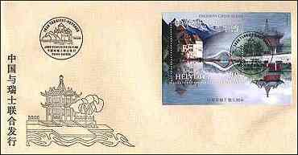
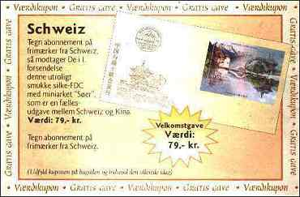
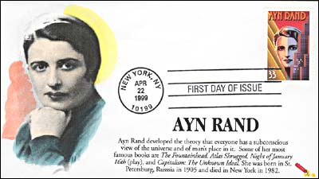
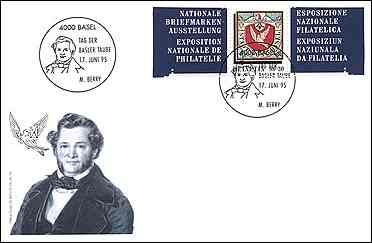

| It has always been a point of discussion to philatelists and/or "simple collectors", whether they
should collect also FDC's, souvenir-sheets and/or maximum cards. Personally I have always regarded FDC's more or less as an "industrial product" made by the
postal authorities to deprive stamp collectors of their money. Up to a point that goes for
souvenir sheets and maxicards as well, when they are not postaly used - and it is very rare to find such
items used for their intended purpose. However, I admit blankly that many such items are very nice looking indeed, and they make a pleasant break to the eye when they are displayed on the Internet together with the ordinary stamps going with them within their topic. An excellent example is a co-issue Switzerland-China, issued in 1998, and displayed on the bottom of this page. The photo in this article displays a voucher from a Danish stamp dealer, saying "Voucher - Free Subscribing Present". The text of the voucher says: SWITZERLAND. When subscribing to Swiss stamps, you will receive in the first lot sent to you also this particularly beautiful FDC, made on silk-paper, and showing the motif "Lakes". |
It is a co-issue between
Switzerland and China. Value 79,00 kr. (approx. $10). George Kringelbach |
 |
 |
| The First Day Cover, on Silk Paper | Voucher - Free Subscribing Present |
| We can compare the modern FDCs with the CTOs. The Canceled To Order stamps were "issued either in sheet with original gum or stuck onto pieces of paper or envelopes and cancelled. Most CTOs can be detected by the presence of gum. The CTO's are generally worth less then the postally used stamps" (after Scott). Being often issued in large quantities and cancelled at dates that have only an approximate relationship with the date displayed on the cancels, this kind of material is rather of a doubtful philatelic value. | Much more interesting are the FDCs realized by the stamp collectors themselves, what means to stick the right stamp on a special envelope and to let them cancel on the day of issue with a special commemoration cancellation. Even more interesting is to design and to print an original cachet (the image on the envelope) by itself. Please see two examples below. |
 |
 |
| The Ayn Rand FDC, cancelled April 22, 1999 at New York, has an original cachet; provided courtesy of Mrs. Helen Fowler, USA, PASIC Vice-President. The Basle Dove FDC shows a special cancellation of June 17, 1995, the opening day of the "Basler Taube" Swiss National philatelic exhibition. | t could be obtained only on that day at the mentioned exhibition. The stamp was cut off from the commemorative S/S, together with its margins. Both FDCs presented above are in my opinion more interesting than the FDC fabricated by the Swiss-Chinese P.As., even if it is nice and uses a special silk paper. (V.M.) |
From the thread
I think homemade FDCs are in excellent taste.
They show the creative spirit of the individual. Covers,
like the letters that many of them carry, are to me more
interesting if they are personal. I often put clip art on
the envelopes I mail to my family. They enjoy them, so they
say. I enjoyed your web site on the subject. Roger.
I feel the same
way (with Roger - V.M.), and I encourage my kids to make them. I have one really
good artist among them who has done some gorgeous dragon
envelopes. Sandra Doyle.
You should consider joining the Art Cover
Exchange. Members exchange "decorated envelopes" on a
get one/send one basis. Some members do FDC's or special cancels;
others just put the covers in the mail stream. Some are
beautifully - crafted, hand-made masterpieces... Ada M. Prill. ACE
No. 357.
I
like them. I'm no artist, but sometimes I'll take the time to
create an envelope that's attractive for a fellow collector,
usually something to do with a stamp or interest expressed. It's
part of the creative spirit. As for snubbing them, what can I say,
"Snobs!". Peter D.